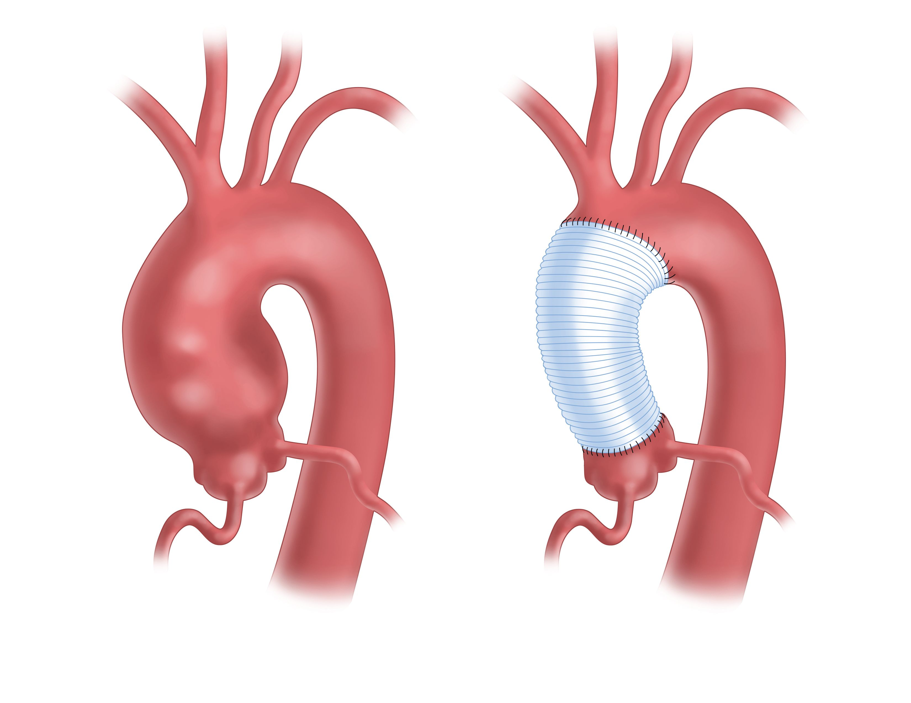

Ascending aorta dilatation
Ascending aorta dilation is when the diameter of the ascending aorta is larger than normal for a person's age, height, and body size. In adults, an ascending aortic diameter of 4 cm or more is considered dilated. Aortic dilation is considered aneurysmal if the diameter is more than 50% larger than normal, or at least 1.5 times the expected diameter.
Ascending aorta dilation can increase the risk of aortic dissection, which can be life-threatening. The risk of dissection increases when the aortic diameter is 4.5 cm or more. The risk of rupture or dissection depends on the size of the aorta and the condition of the aortic wall.
